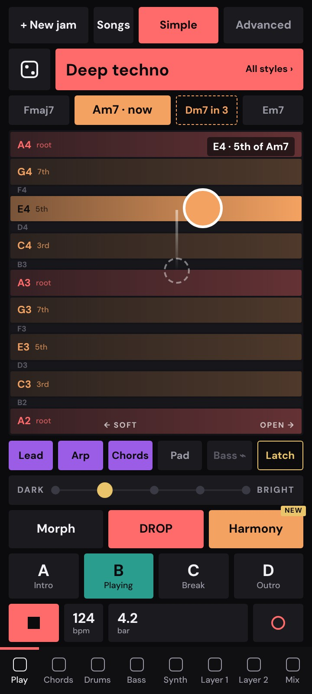
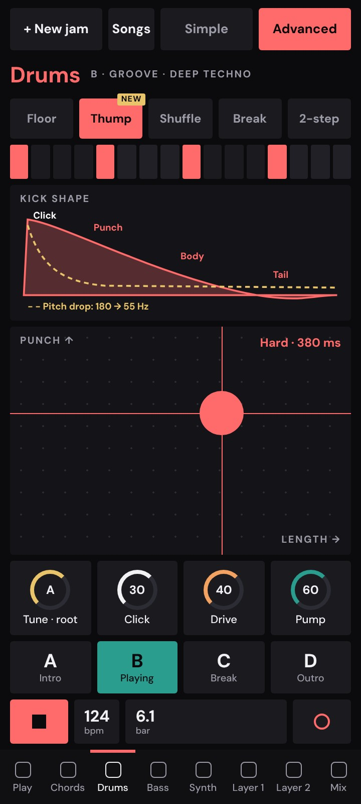
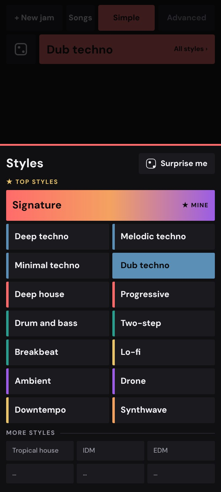
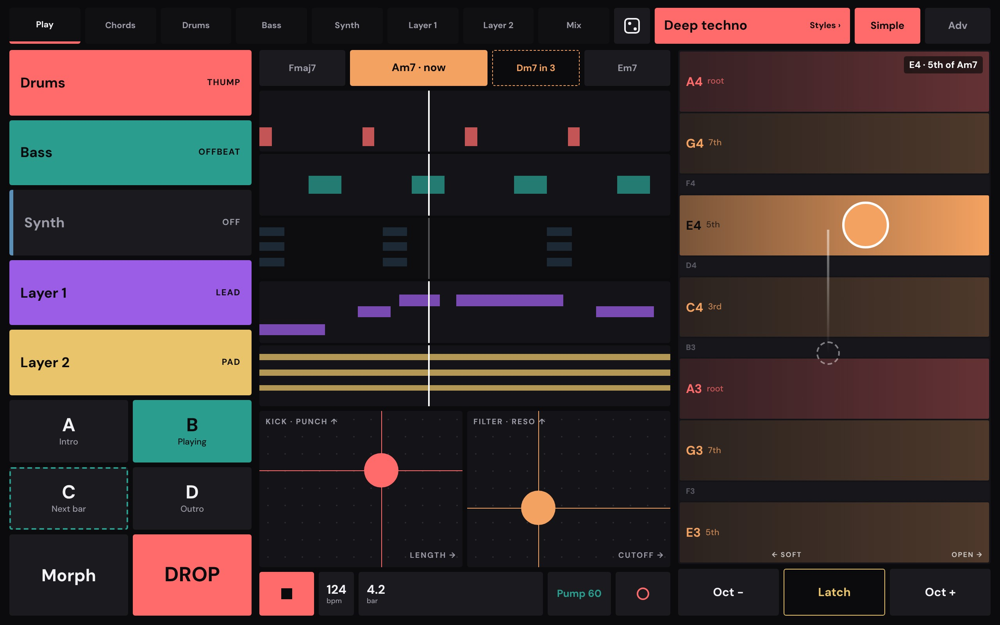
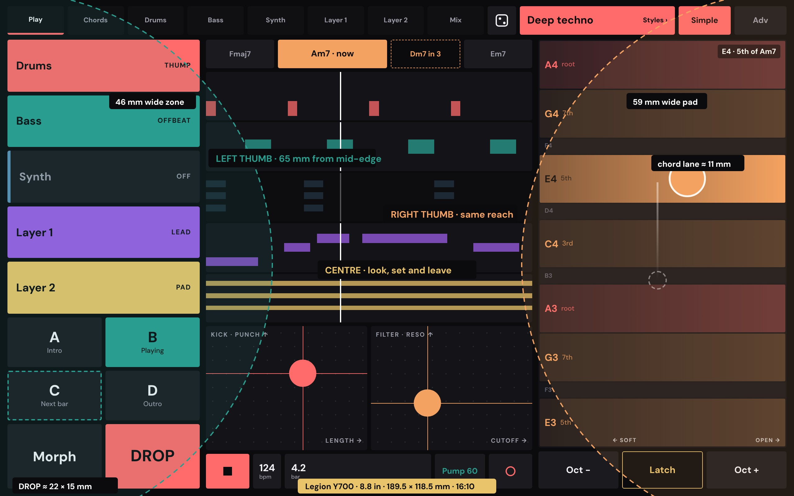
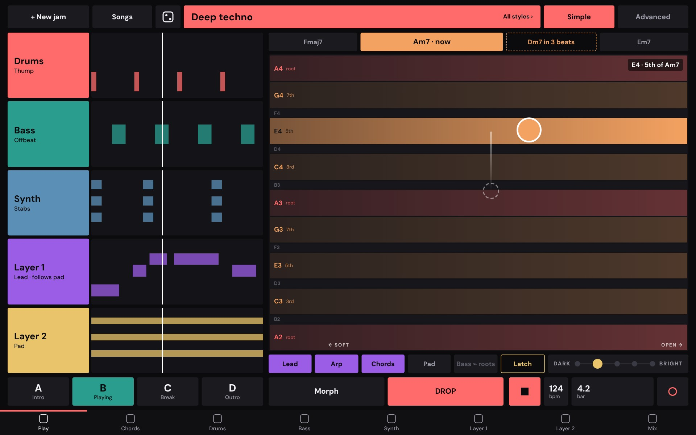
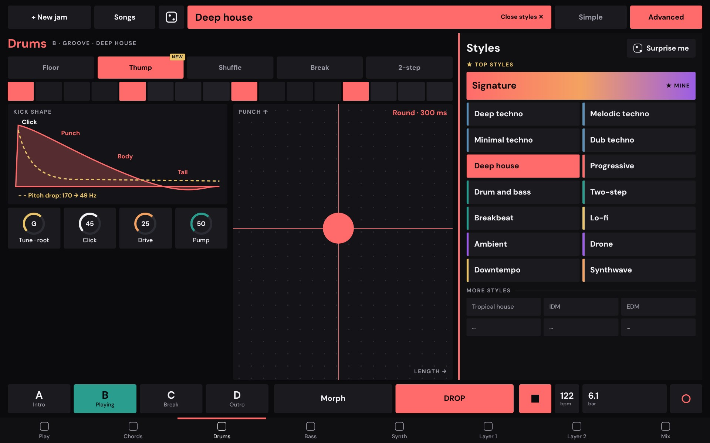

Drafted before reading the repo, then checked against it read-only (nothing pushed). The repo wording is in spec section 10 and rows F1 to F7; where this page and those differ, they win.
No picker on launch. The list stays one tap away, top styles first.
Signature · Deep techno · Melodic techno · Minimal techno · Dub techno · Deep house · Progressive · Drum and bass · Two-step · Breakbeat · Lo-fi · Ambient · Drone · Downtempo · Synthwave
Random start and the dice draw from these only. Everything below the line is still one tap away in the list. Say so if the dice should include the rest.
Pick:Loaded and armed, one tap on Play starts it
Override if: you want sound the instant the APK opens. That needs the wrapper's autoplay setting and would be APK-only.
Assumed: some of the fourteen (dub techno, minimal techno, drone, synthwave and others) may not exist among the current 24 styles. Any that are missing get created in the tuning row.
Risk: a full style swap rebuilds synth patches. Build the new patches silently first, then switch on the bar line.
Question: can rules alone produce leads you would keep, per style, with no samples and no model?
First task of the spike: a read-only audit of the current lead generator, written down, to confirm or correct this list.
Every note is stored as degree above the chord · octave · start · length · accent · slide, never as a fixed pitch, and the whole phrase comes from one seed. That is what lets the harmony pad move it later.
| Style | Lead | Drums |
|---|---|---|
| Deep techno | One-bar cell looped, 2 to 4 notes from root, ♭3, 5, ♭7. One note changes at bar 8. Filter and delay do the moving. | Thump. Long, dark kick, sparse hats. |
| Melodic techno | 8-bar arp-led phrase in minor, climbing to one peak, then resetting. | Thump or floor, offbeat hat. |
| Minimal techno | Two or three notes, mostly silence, tiny mutations. | Short dry kick, clicks for percussion. |
| Dub techno | The echoing chord stab is the melody. Lead almost absent. | Soft round kick, hats fed into delay. |
| Deep house | Two-bar call and response, short stabs, minor pentatonic, 40% silence. | Round kick, shuffled hats, clap on 2 and 4. |
| Progressive | 8 to 16 bar slow-rising phrase over a steady arp. | Floor kick, long build. |
| Drum and bass | Half-time long notes, one wide leap per 8-bar phrase. | Simple two-step break, tight snare. |
| Two-step | Short syncopated hooks, bright, major or Dorian. | Skipping kick, shuffled hats. |
| Breakbeat | Riff hooks, pentatonic, call and response. | Syncopated synthesised break. |
| Lo-fi | Lazy phrases behind the beat, 7ths, pentatonic. | Soft kick, swing, noisy hats. |
| Ambient | Two or three loops of unequal length drifting apart. Never resolves. | None, or a very soft Thump as a heartbeat. |
| Drone | No melody. One or two held tones that move a step every several bars. | None. |
| Downtempo | Slow 4-bar phrases with long gaps. | Half-time soft kick, rim. |
| Synthwave | 8th-note arps and anthemic 4-bar hooks in minor, heavy repetition. | Floor kick, big synthetic snare. |
Starting directions, tuned by ear in the spike and the tuning row. Styles below the line keep their current engines.
The four lead kinds from phase 2 (hooks, 4 to 8 bar phrases, rolling acid lines, slow evolving lines) become presets of this one engine, not four separate generators.
| Mode | Controls |
|---|---|
| Simple | Kind (Hook · Phrase · Roll · Drift), New (dice), Vary (one mutation now) |
| Advanced | Density, Syncopation, Range, Repeat (A against B), Leap, Space, Phrase length 1/2/4/8, Evolve rate |
All numbers above are starting values to tune by ear, not findings.
A theremin for the whole piece. The patterns keep their rhythm; your finger supplies the pitch.
| Layer | What it does |
|---|---|
| Lead | Its motif re-centres on the touched note. Rhythm and contour stay. |
| Arp | Its range centres on the touched note. |
| Chords | Re-voiced so the top note is the touched note, or the nearest chord tone below it. |
| Pad | Off by default. On: opens its voicing upward. |
| Bass | Locked to the roots. |
Follow chips under the pad switch each layer in or out.
Pick:Let go and it returns home; Latch holds it
Override if: you want the pad to stay where you leave it by default.
Not included: key changes, playing chords by finger, anything on drums.
A thumping kick on the beat for vibing: punchy, with a shape you can play.
| Part | What it is |
|---|---|
| Click | A tick of a few milliseconds at the front, so it cuts through on a phone speaker. |
| Punch | A fast pitch sweep from around 150 to 200 Hz down to the fundamental. |
| Body | A sine at 45 to 60 Hz, tuned to the song's root. |
| Tail | The volume decay, roughly 200 to 500 ms. |
Then soft saturation for weight, and headroom before the limiter so it does not crackle. All synthesised, no samples.
Assumed: the current kick is a simpler one-stage sound. The audit confirms. All numbers are starting values.
Built for the Legion Y700 held in both hands. Thumbs play at the edges; the centre is for looking.
| Zone | What lives there |
|---|---|
| Left thumb 46 mm | Structure. Five layer mutes, sections A to D as a 2 × 2 block, Morph and DROP at the bottom. |
| Right thumb 59 mm | The harmony pad, full height, an octave and a half, chord lanes about 11 mm tall. Octave down, Latch, octave up underneath. |
| Centre | Chord strip, pattern view, the kick quadrant and the filter quadrant, transport. Things you look at, or set and leave. |
Pick:Grip layout, thumbs at the edges
Override if: you mostly play it flat on a desk. Then the pad moves to the centre and grows.
Assumed: the 65 mm thumb reach in the annotated screen is my working estimate, not a measurement. The row starts with a one-screen reach test on your hands and sets the zone widths from that. I have not seen the current tablet layout either.
Your own style, first in the list. Natascha Polké, Jon Hopkins and Lane 8, reduced to what a synth-only groovebox can do.
| From | Taken |
|---|---|
| Polké | Melancholy, song-like lines. Glassy motifs over a warm bass. With no vocals in the app, the lead carries the voice's part. |
| Hopkins | A hard, steady pulse against soft ambient wash. One drone note under everything. A little grit on the texture. |
| Lane 8 | Restraint. An arp that opens slowly, held bass notes, few elements, each one clear. |
Built from published descriptions of their sound and general production knowledge, not from analysing audio. It gets tuned by ear against one reference track per artist that you name.
| Part | Setting |
|---|---|
| Tempo, key | 123 bpm. Minor, home Aeolian, colour strip limited to Phrygian through Dorian. |
| Drums | Thump. Round tuned kick, medium tail. A quiet offbeat hat. Rim on 2 and 4 available, off by default. No fills. |
| Pads | Wide detuned pad with a slow filter sweep over 8 to 16 bars, a noise layer riding the sweep for the whoosh, long reverb, Pump high so it breathes around the kick. |
| Drone | The root, held, always on, very low in the mix. |
| Bass | One long sub note per chord, on the root. |
| Lead | Sharp: a bright pluck or bell, instant attack, short decay, dotted-eighth delay, little reverb. A 2-bar hook of 4 or 5 notes in an 8-bar A A′ A B phrase, peaking around bar 6. |
| Arp | Quiet 16ths under the lead, filter closed at first, opening on DROP. |
| Chords | Four-chord minor loops, one chord per bar or two, open voicings with added 9ths. |
Signature is built last in the tuning row, because it needs the new kick, the lead engine and the pad all in place.
Three bundles, three chats, the usual starter. G7 Retouch moves to bundle 13.
| Bundle | Row | What |
|---|---|---|
| 10 | F1 | Straight in: random top vibe on launch, dice, the new picker |
| 10 | F2 | The four-part kick, the kick quadrant, Thump |
| 11 | F3 | Lead planner, measures, the lab; Deep techno, Deep house, Ambient, Drum and bass |
| 11 | F4 | Lead and drum profiles for the other ten top vibes |
| 12 | F5 | The harmony pad, phone and tablet, with Colour |
| 12 | F6 | Perform on the Y700, sized in millimetres |
| 12 | F7 | Signature |
Mockups drawn from the live look. Swipe sideways.






